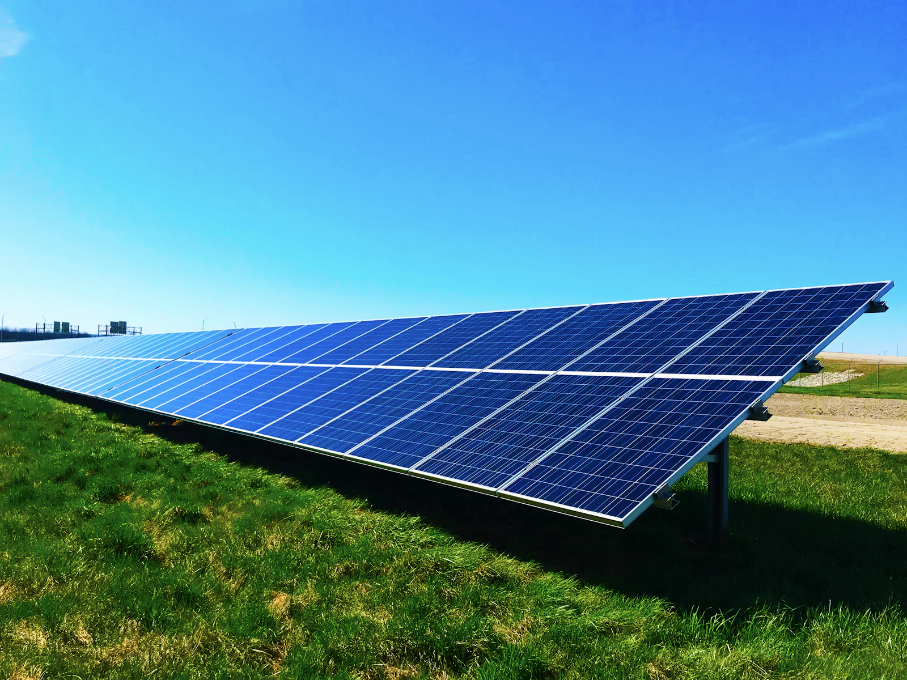

名取市の太陽光発電・蓄電池
名取の夜を、
自分の家の電気で。
昼に屋根でつくった電気を蓄電池にためて、夜や停電のときに使う。名取市の補助金は、太陽光と蓄電池を一緒に設置すると対象になります。
令和8年度の補助金は、この日までの設置・電力受給開始が対象です。工事と電力会社の手続きの期間を見込んで、お早めに。
間に合うか相談するこんなことで
迷っていませんか。
- 電気代が上がり続け、家計を見直したい
- 地震や停電に備えて、家で電気を使えるようにしたい
- 名取市の補助金が使えるのか、条件がわからない
- 卒FITを迎えた太陽光に、蓄電池を後付けしたい
- 訪問販売でもらった見積もりが妥当か相談したい
名取市の補助金は、
太陽光と蓄電池の
同時設置が対象です。
令和8年度 名取市住宅用再生可能エネルギー等設備導入補助金。設置が終わってから申請する事後申請で、先着順です。
- 定置用蓄電池（太陽光と接続）
- 1件 6万円
- 市への申請締切
- 2027.2.1
2026年10月9日時点。予算に達した時点で受付が終わります。
対象になる
- 太陽光と定置用蓄電池を同時に設置
- 既存パネルへの増設と、蓄電池の新設
- 太陽光と接続する定置用蓄電池
- 購入した設備で、書類の名義が同じ
対象にならない
- 太陽光発電だけの設置
- リース・PPAなどの契約
- 対象期間外に設置した設備
申請前に知っておきたい
5つの条件
- 対象外
太陽光だけの設置は対象外
蓄電池との同時設置、または既存パネルへの増設と蓄電池の新設が条件です。
- 必須
設置が終わってから申請する
太陽光は、電力会社の電力受給契約確認書が届いてから申請します。
- 期限
2026年12月31日までの設置が対象
申請締切は2027年2月1日。先着順で、予算に達した時点で終わります。
- 対象外
リース・PPAは対象外
購入した設備が対象です。期間満了後に所有権が移る契約も対象外です。
- 必須
書類の名義をすべて同じ人に
契約書・領収書・申請書の名義をそろえる必要があります。
最新の受付状況は、名取市 環境共創課（022-724-7159）にご確認ください。
宮城県の補助金
- 太陽光発電蓄エネ設備併設タイプ
- 3万円
- 蓄電池対象設備に限る
- 4万円
- V2HEVと住宅をつなぐ設備
- 4万円
名取市の補助金と併用できるかも、あわせてご相談ください。
ご相談から
補助金の入金まで
名取市は事後申請です。電力受給開始が期限に間に合うかが大切です。
- ご相談
- 現地調査
- お見積もり・ご契約
- 連系申請
- 工事
- 電力受給開始12/31まで
- 市へ申請
- 補助金の入金
名取市で設置するときのポイント
名取市の気候と土地の特徴を踏まえて、機器と施工をご提案します。

日照と雪
太平洋側で冬も晴れる日が比較的多い一方、発電量は屋根の向き・角度・周りの影で変わります。現地調査で確かめます。

沿岸部の塩害
閖上・下増田・北釜など海に近い地域では、海岸からの距離による機種や保証の条件を確かめて選びます。

屋根と住宅の状態
築年数に応じて、屋根の傷みや防水の状態を確認します。新築の場合は ZEH 関連の制度もあわせて確認します。

停電の夜も、
いつもの明かりを。
太陽光と蓄電池があれば、昼は発電した電気を、夜はためた電気を使えます。停電のときに電気を送れる範囲は、蓄電池の種類で変わります。
| 全負荷型家全体へ送る | 特定負荷型決めた回路へ送る | |
|---|---|---|
| 照明 | ● | ● |
| 冷蔵庫 | ● | ● |
| テレビ | ● | － |
| コンセント | ● | － |
名取市の株式会社SCに任せる理由
手倉田に本社
現地調査も設置後のご相談も、近くからすぐに伺います。
毎日21時まで電話受付
年中無休、9:00〜21:00。仕事帰りのご相談にも対応します。
補助金の条件まで一緒に
太陽光・蓄電池・補助金の条件を、まとめてご説明します。
〒981-1231 宮城県名取市手倉田字諏訪357-2
よくある質問
太陽光発電だけでも、名取市の補助金は使えますか？
使えません。太陽光発電と定置用蓄電池の同時設置、または既存パネルへの増設と定置用蓄電池の新規設置が条件です。
蓄電池だけを後付けしても補助金は使えますか？
太陽光発電設備と接続する定置用蓄電池であれば、1件あたり6万円の対象です。SII登録機器などの要件があります。
補助金は工事の前に申請しますか？
名取市は設置後の事後申請です。太陽光と一緒に申請する場合は、電力受給契約確認書が届いてから申請します。
今から契約しても今年度の補助金に間に合いますか？
2026年12月31日までに設置・電力受給開始が必要です。工事と電力会社の手続きの期間によるため、早めにご相談ください。
宮城県の補助金と一緒に使えますか？
公募要領の条件によります。併用の可否も当社へご相談ください。
海の近く（閖上など）でも設置できますか？
海岸からの距離により、機種や保証の条件が異なります。現地調査でご自宅の条件を確認します。
補助金を使えるか、
ご自宅の条件で確かめます。
補助金の対象になるか、期限に間に合うか、見積もりは妥当か。名取市手倉田の株式会社SCがお答えします。